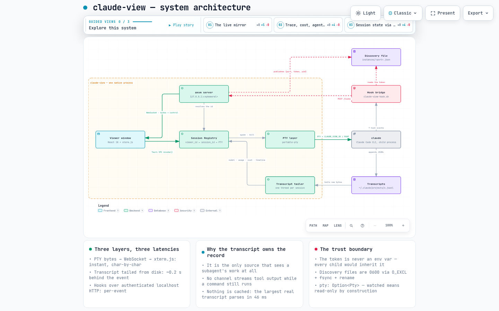
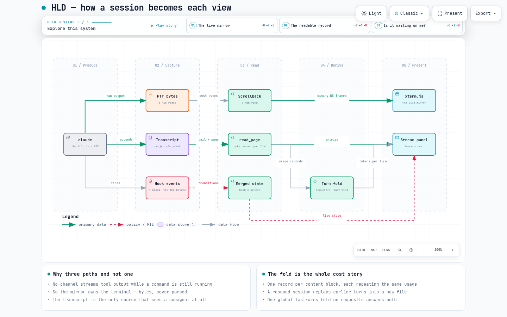
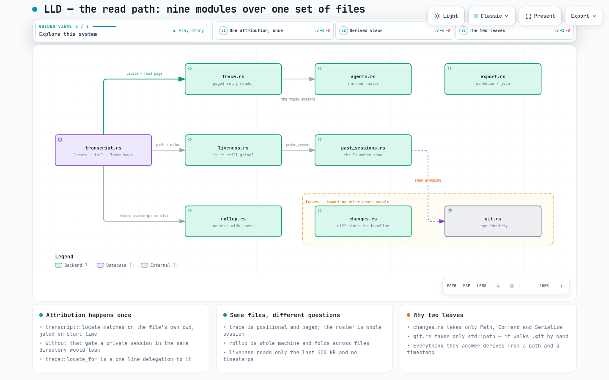
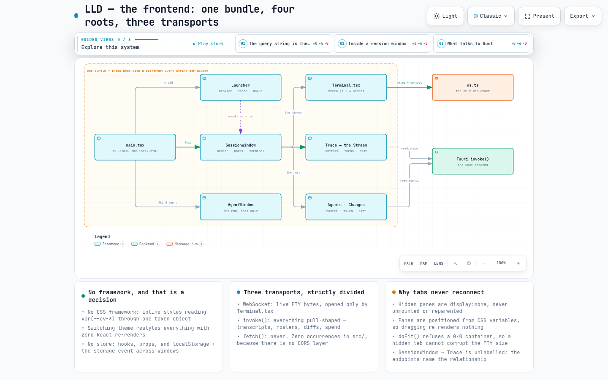
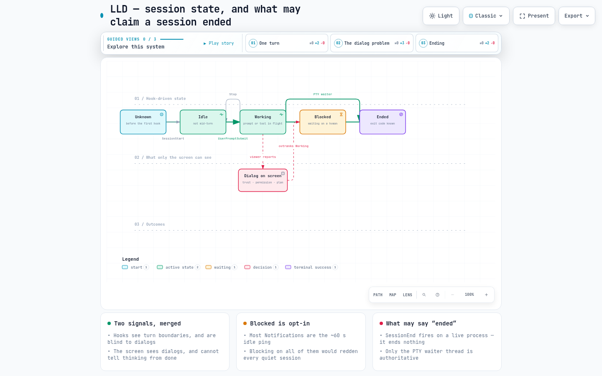

A desktop app that opens a dedicated window for each Claude Code CLI session, mirrors its terminal character-by-character, and keeps a readable, costed record of everything the session did.




